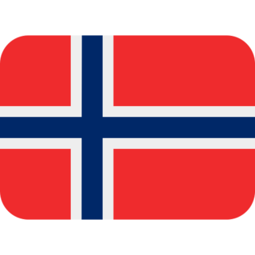
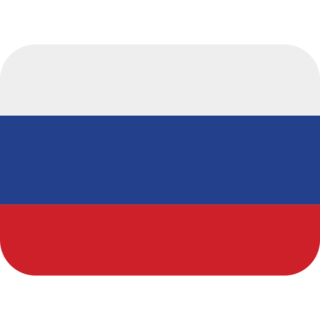

Education
Emory University - Bachelors of Science in Quantitative Sciences and Math/Computer Science (Expected 2019)
American School of Warsaw - High School IB Diploma - 2015
Work Experience
- Geocoder, Emory Center for Digital Scholarship
- Atlanta, USA- April 2017—Present
As a geocoder, I have been working on the Atlanta Explorer project, which seeks to create geodatabases of turn of the century Atlanta. Using machine learning techniques, we extract data from archives of city directories which can be used to digitally reconstruct historic Atlanta.
- Cognitive Linguistics Researcher, Emory University
- Atlanta, USA- August 2016—Present
The lab is a collaboration between the linguistics, psychology, and computer science departments. We conduct cognitive psychology experiments and investigate the nature of causality through time series data. My tasks include writing java programs, scraping for data, and working on optimization problems.
- EPASS tutor, Emory University
- Atlanta, USA- November 2016—May 2017
I was a tutor for Calculus I, Calculus II, and General Physics I for Emory University through their EPASS program.
- GIS Cartographer, Antares Norge AS.
- Oslo, Norway- August 2016—September 2016
Antares is a startup oil and gas exploration company in Norway. During the summer of 2016, Antares worked on their first license applications. My main task was to create maps of the North Sea (surface and subsurface), using data from the Norwegian Petroleum Directorate and from the geophysicist. I was also tasked with doing the graphic design for the application. Furthermore, I got insight in a start-up company by attending strategy meetings.
- Translator, Emory University Political Science Department
- Atlanta, USA- November 2015—May 2016
This project is investigating and comparing the appointment and removal of supreme court justices around the world. My task was to translate the current Norwegian Constitution as well as every revision through time pertaining to this issue.
- Research Assistant, Operation Wallacea
- Mariorano, Madagascar- June 2014—July 2014
As research assistant, I helped scientists gather data on various features of the ecosystem, including capturing spiders, counting birds, measuring trees, and mapping regeneration of coral reefs. In addition, we received education on ecological research and Malagasy culture.
Skills
- Coding
- Java
- Python
- R
- HTML/CSS
- Adobe Products
- Photoshop
- Illustrator
- Premiere
- Microsoft Office
- ArcGIS
Language Skills
- English

- Fluent
- Norwegian 
- Fluent
- Polish
- Conversational
- German
- Proficient
- Russian 
- Basic
Licenses
- Class C US Driver's License
- Båtførerbevis (Boat Licesnse)
- sjofarsdir.no
- PADI Open Water Diver (SCUBA)
- padi.com